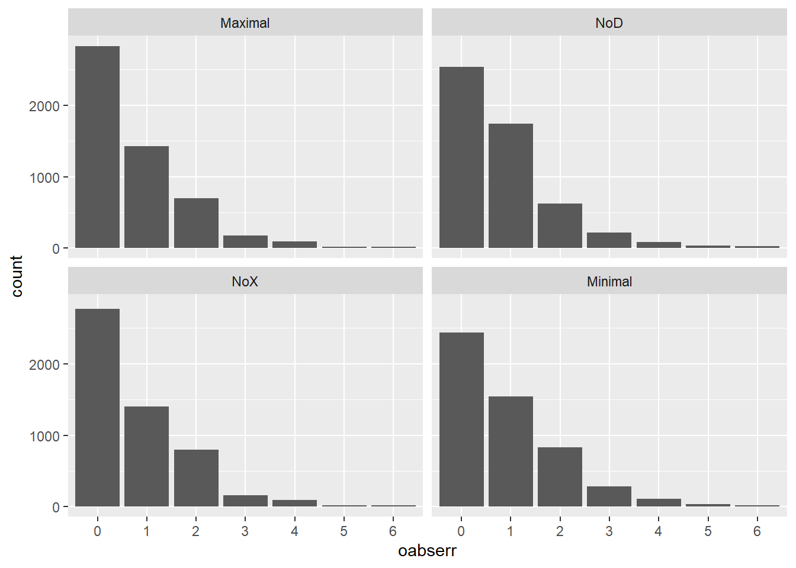
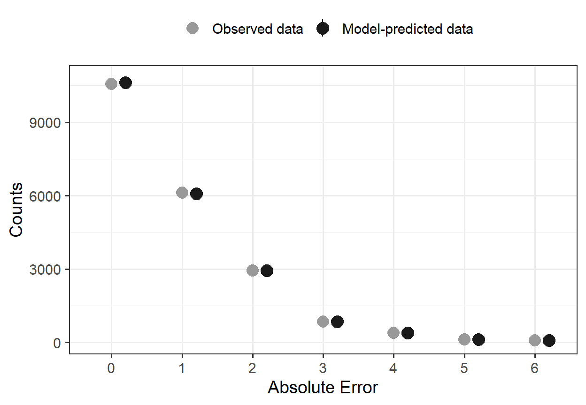
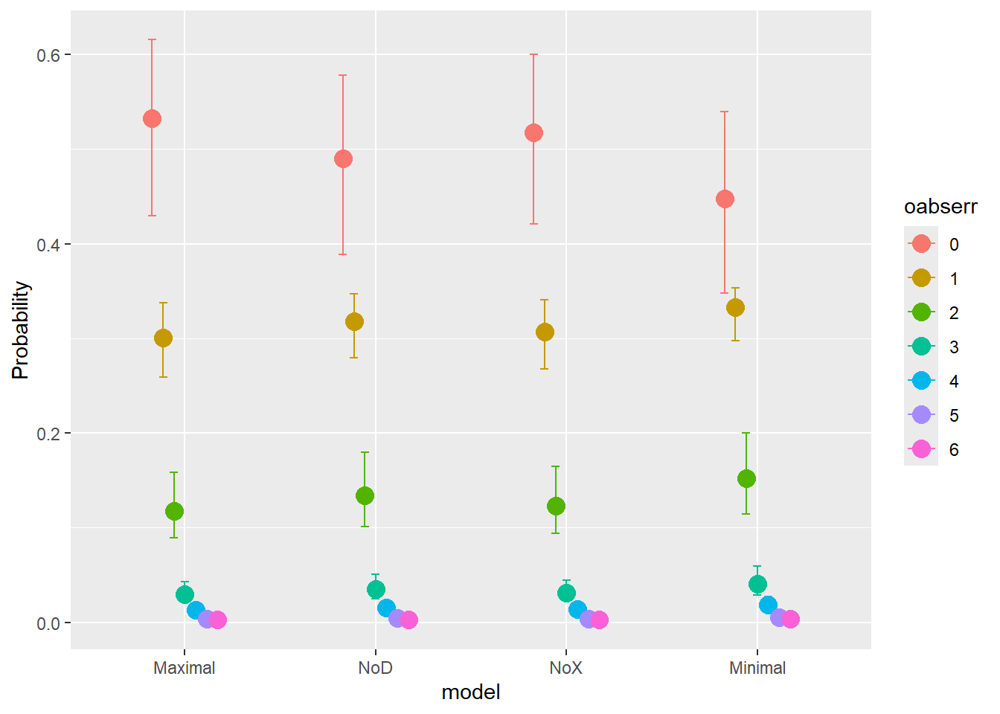
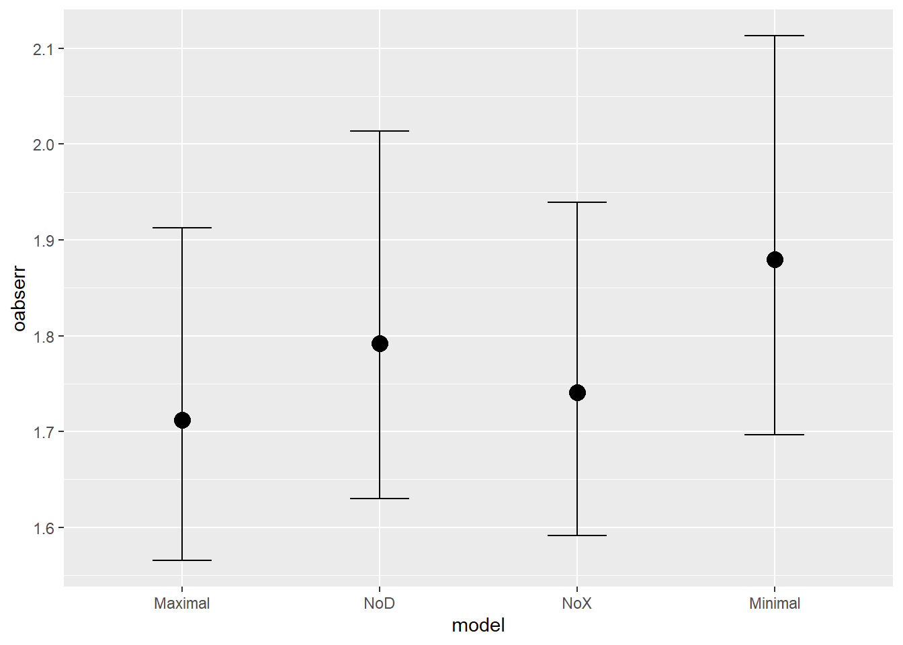
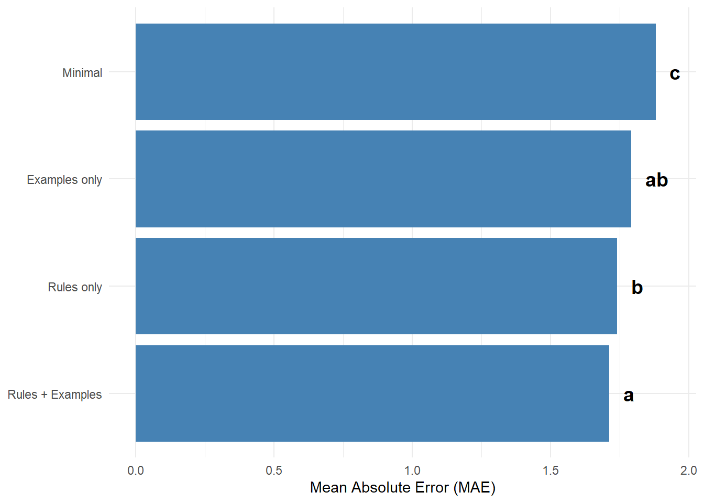
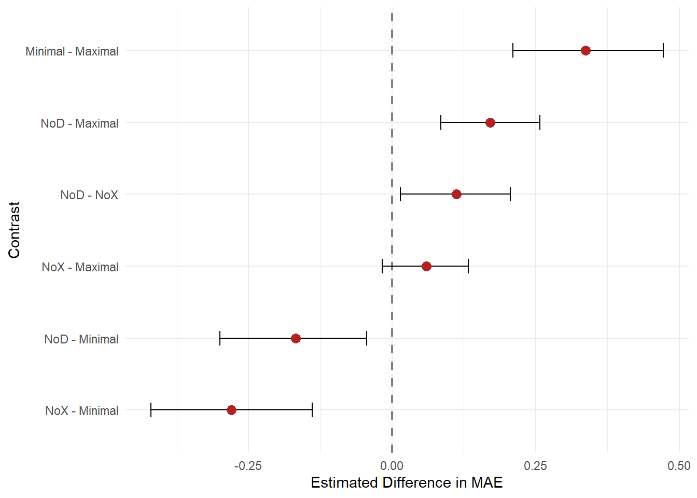
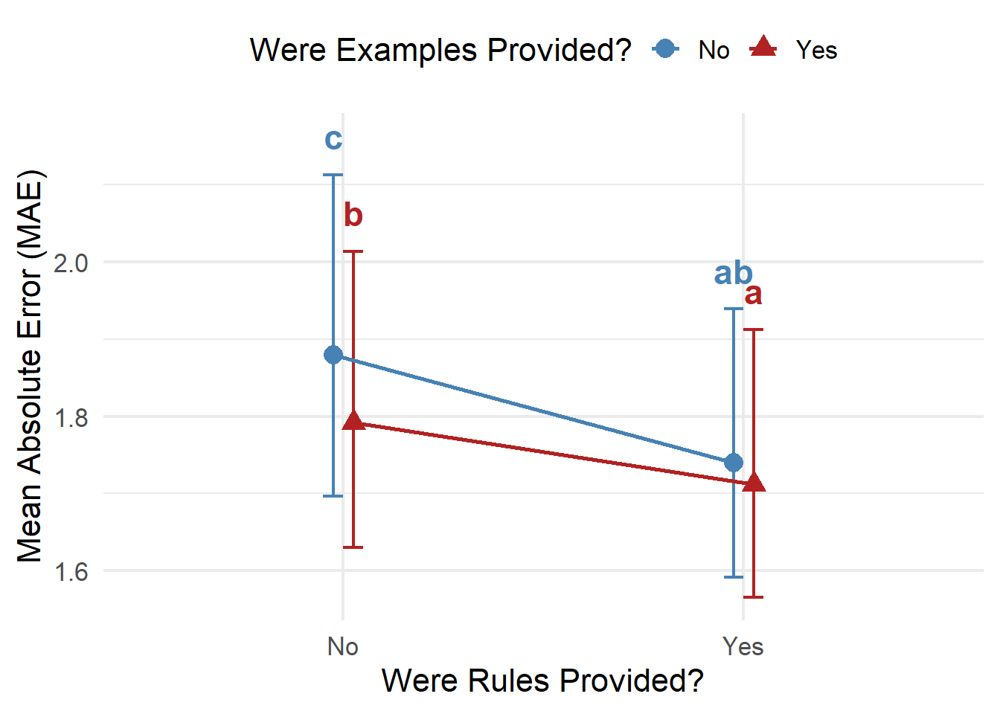
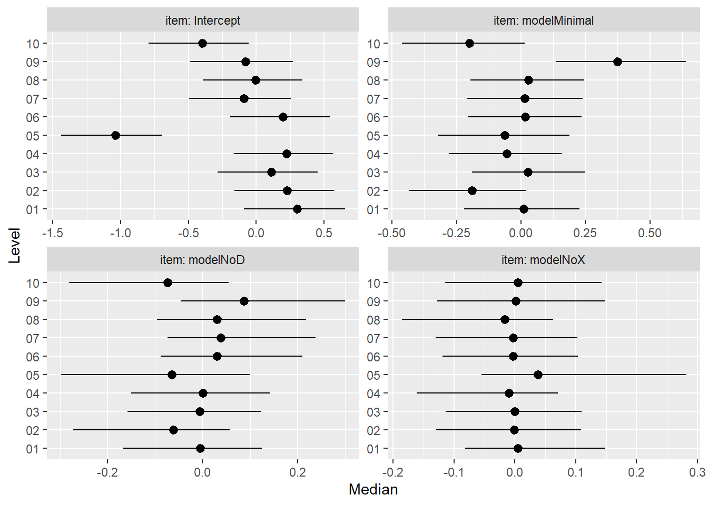

library(tidyverse)
library(furrr)
library(brms)
library(easystats)
library(gt)
plan("multisession", workers = 9)Ablation Analyses
Setup
Prep Data
# Sessions used as fewshot examples (excluded from evaluation)
source("load_data.R")
excluded_ids <- load_exemplars()# Predictions (public, ../data) joined to human ratings (NDA, ../nda)
ablation_raw <- load_prediction_sheets(
conditions = c("full", "no_descriptive", "no_demonstrative", "minimal"),
models = "Qwen 3 (22B-235B)"
)# Collect item score labels and item score predictions
item_indices <- 1:10
item_dfs <- map(
item_indices,
\(i) {
pv1_name <- sprintf("pred%02d_1", i)
pv2_name <- sprintf("pred%02d_2", i)
pv3_name <- sprintf("pred%02d_3", i)
ablation_raw[[i+1]] |>
transmute(
session,
patient,
condition,
label = ground_truth,
!!pv1_name := rating_0,
!!pv2_name := rating_1,
!!pv3_name := rating_2
) |>
filter(session %in% excluded_ids[[i+1]] == FALSE) |>
pivot_longer(starts_with("pred"), names_to = "var", values_to = "pred") |>
separate_wider_delim(cols = var, delim = "_", names = c("item", "seed")) |>
mutate(item = str_remove(item, "pred"))
}
)# Combine collected data and calculate indirect total score predictions
ablation_all <- bind_rows(item_dfs)fit_dat <-
ablation_all |>
transmute(
session = factor(session),
patient = factor(patient),
model = factor(
condition,
levels = c(
"full",
"no_descriptive",
"no_demonstrative",
"minimal"
),
labels = c(
"Maximal",
"NoD",
"NoX",
"Minimal"
)
),
item = factor(item),
seed = factor(seed),
pred,
label,
abserr = abs(pred - label),
oabserr = factor(abserr, levels = 0:6, ordered = TRUE)
) |>
filter(!is.na(abserr)) |>
summarize(
.by = c(session, patient, item, model),
across(pred:oabserr, \(x) first(x, na_rm = TRUE))
)ggplot(fit_dat, aes(x = oabserr)) + facet_wrap(~model) + geom_bar()
Fit HBM
fit <- brm(
formula = oabserr ~ 1 + model + (1 + model | item) + (1 | patient),
data = fit_dat,
family = cumulative(link = "logit", threshold = "flexible"),
prior = c(
set_prior("normal(0, 3)", class = "b"),
set_prior("student_t(3, 0, 2.5)", class = "Intercept"),
set_prior("student_t(3, 0, 2.5)", class = "sd"),
set_prior("lkj_corr_cholesky(2)", class = "L")
),
init = 0.1,
warmup = 3000,
iter = 4000,
chains = 4,
cores = 4,
file = file.path(fits_dir, "ablation"),
file_refit = "on_change",
refresh = 500,
control = list(adapt_delta = 0.99, max_treedepth = 20),
backend = "cmdstanr"
)model_parameters(fit, effects = "all")Loading required namespace: rstan# Fixed Effects
Parameter | Median | 95% CI | pd | Rhat | ESS (tail)
-------------------------------------------------------------------
Intercept[1] | 0.13 | [-0.28, 0.47] | 77.95% | 1.003 | 991
Intercept[2] | 1.61 | [ 1.21, 1.95] | 100% | 1.004 | 1021
Intercept[3] | 2.96 | [ 2.56, 3.30] | 100% | 1.004 | 948
Intercept[4] | 3.92 | [ 3.51, 4.27] | 100% | 1.003 | 1025
Intercept[5] | 5.06 | [ 4.64, 5.42] | 100% | 1.003 | 1105
Intercept[6] | 5.94 | [ 5.50, 6.34] | 100% | 1.003 | 1156
modelNoD | 0.17 | [ 0.07, 0.28] | 99.88% | 1.001 | 3033
modelNoX | 0.06 | [-0.03, 0.15] | 90.83% | 1.001 | 2802
modelMinimal | 0.34 | [ 0.18, 0.50] | 100% | 1.002 | 2385
# Random Effects
Parameter | Median | 95% CI | pd | Rhat | ESS (tail)
-----------------------------------------------------------------------------------------
SD (Intercept: item) | 0.48 | [ 0.30, 0.91] | 100% | 1.004 | 1769
SD (modelNoD: item) | 0.10 | [ 0.01, 0.24] | 100% | 1.002 | 1361
SD (modelNoX: item) | 0.05 | [ 0.00, 0.17] | 100% | 1.002 | 1927
SD (modelMinimal: item) | 0.20 | [ 0.10, 0.39] | 100% | 1.000 | 3014
SD (Intercept: patient) | 0.73 | [ 0.67, 0.81] | 100% | 1.001 | 1775
Cor (Intercept~modelNoD: item) | 0.13 | [-0.58, 0.72] | 63.58% | 1.001 | 3105
Cor (Intercept~modelNoX: item) | -0.23 | [-0.81, 0.60] | 70.17% | 1.001 | 2683
Cor (modelNoD~modelNoX: item) | -0.01 | [-0.72, 0.69] | 51.23% | 1.001 | 2576
Cor (Intercept~modelMinimal: item) | 0.03 | [-0.51, 0.57] | 54.43% | 1.000 | 2960
Cor (modelNoD~modelMinimal: item) | 0.44 | [-0.35, 0.86] | 86.92% | 1.002 | 1877
Cor (modelNoX~modelMinimal: item) | 0.04 | [-0.67, 0.69] | 54.27% | 1.001 | 2378
Uncertainty intervals (equal-tailed) computed using a MCMC distribution
approximation.
The model has a log- or logit-link. Consider using `exponentiate =
TRUE` to interpret coefficients as ratios.
Some coefficients are very large, which may indicate issues with
complete separation.Evaluate Model Fit
p <- check_predictions(fit)
pp <- plot(
p,
size_point = 3,
size_bar = 1,
colors = c("grey60", "grey10")
)
# Older versions of `see` place the outcome categories at 1-7 on a continuous
# axis; newer versions use a discrete axis already labeled 0-6
x_is_discrete <- inherits(ggplot2::layer_data(pp, 1)$x, "mapped_discrete")
pp +
(if (x_is_discrete) {
scale_x_discrete("Absolute Error")
} else {
scale_x_continuous("Absolute Error", breaks = 1:7, labels = 0:6)
}) +
labs(title = NULL, subtitle = NULL) +
theme_bw(base_size = 14) +
theme(
panel.grid.minor.x = element_blank(),
legend.position = "top"
)
Plot Marginal Means
conditional_effects(fit, effects = "model", categorical = TRUE) |> plot()
conditional_effects(fit, effects = "model", categorical = FALSE) |> plot()
conditional_effects(fit, effects = "model", categorical = FALSE)[[1]] |>
as_tibble() |>
mutate(
label = c("Rules + Examples", "Examples only", "Rules only", "Minimal"),
label = fct_reorder(label, estimate__),
# 1. Define your significance groupings based on your post-hoc tests.
# (You will need to verify these exact letters based on your alpha level)
sig_group = c("a", "ab", "b", "c")
) |>
ggplot(aes(x = estimate__, y = label)) +
geom_col(fill = "steelblue") +
# 2. Add the text labels just past the end of the bar
geom_text(
aes(label = sig_group, x = estimate__ + 0.05),
size = 5,
fontface = "bold",
hjust = 0 # Aligns the text to the left so it flows away from the bar
) +
# 3. Expand the x-axis limits slightly so the text doesn't get cut off
coord_cartesian(clip = "off") +
labs(x = "Mean Absolute Error (MAE)", y = NULL) +
theme_minimal()
Test Hypotheses
h <- hypothesis(
x = fit,
hypothesis = c(
"NoD - Maximal" = "modelNoD > 0",
"NoX - Maximal" = "modelNoX > 0",
"Minimal - Maximal" = "modelMinimal > 0",
"NoD - NoX" = "modelNoD - modelNoX > 0",
"NoD - Minimal" = "modelNoD - modelMinimal < 0",
"NoX - Minimal" = "modelNoX - modelMinimal < 0"
),
robust = TRUE
)
h$hypothesis |>
mutate(
pval = 2*(1 - Post.Prob),
OR = exp(Estimate),
Star = if_else(pval < .05, "*", "")
) |>
gt() |>
fmt_number(columns = c(Estimate:Evid.Ratio, OR), decimals = 2) |>
fmt_number(columns = c(Post.Prob, pval), decimals = 3)| Hypothesis | Estimate | Est.Error | CI.Lower | CI.Upper | Evid.Ratio | Post.Prob | Star | pval | OR |
|---|---|---|---|---|---|---|---|---|---|
| NoD - Maximal | 0.17 | 0.05 | 0.09 | 0.26 | 799.00 | 0.999 | * | 0.002 | 1.19 |
| NoX - Maximal | 0.06 | 0.04 | −0.02 | 0.13 | 9.90 | 0.908 | 0.183 | 1.06 | |
| Minimal - Maximal | 0.34 | 0.08 | 0.21 | 0.47 | Inf | 1.000 | * | 0.000 | 1.40 |
| NoD - NoX | 0.11 | 0.06 | 0.01 | 0.21 | 30.25 | 0.968 | 0.064 | 1.12 | |
| NoD - Minimal | −0.17 | 0.07 | −0.30 | −0.04 | 50.95 | 0.981 | * | 0.038 | 0.85 |
| NoX - Minimal | −0.28 | 0.08 | −0.42 | −0.14 | 399.00 | 0.998 | * | 0.005 | 0.76 |
h[[1]] |>
as_tibble() |>
mutate(
# Reorder the contrasts by the size of the difference
Hypothesis = fct_reorder(Hypothesis, Estimate)
) |>
ggplot(aes(x = Estimate, y = Hypothesis)) +
# Add a vertical reference line at zero
geom_vline(xintercept = 0, linetype = "dashed", color = "gray50", linewidth = 0.8) +
geom_errorbarh(aes(xmin = CI.Lower, xmax = CI.Upper), height = 0.2) +
geom_point(size = 3, color = "firebrick") +
labs(
x = "Estimated Difference in MAE",
y = "Contrast"
) +
theme_minimal()Warning: `geom_errorbarh()` was deprecated in ggplot2 4.0.0.
ℹ Please use the `orientation` argument of `geom_errorbar()` instead.`height` was translated to `width`.
conditional_effects(fit, effects = "model", categorical = FALSE)[[1]] |>
as_tibble() |>
mutate(
label = c("Rules + Examples", "Examples only", "Rules only", "Minimal"),
has_rules = c("Yes", "No", "Yes", "No"),
has_examples = c("Yes", "Yes", "No", "No"),
has_rules = factor(has_rules, levels = c("No", "Yes")),
has_examples = factor(has_examples, levels = c("No", "Yes")),
# 1. Bring the significance letters back into the dataset
sig_group = c("a", "b", "ab", "c")
) |>
ggplot(aes(x = has_rules, y = estimate__, color = has_examples, group = has_examples, shape = has_examples)) +
geom_errorbar(aes(ymin = lower__, ymax = upper__), width = 0.1, position = position_dodge(0.1)) +
geom_line(linewidth = 1, position = position_dodge(0.1)) +
geom_point(size = 4, position = position_dodge(0.1)) +
# 2. Add the text layer mapped to the significance groups
geom_text(
# Position the text just above the maximum CI bound
aes(label = sig_group, y = upper__ + 0.05),
# Use the exact same dodge width so the text stays aligned with its point
position = position_dodge(0.1),
show.legend = FALSE, # Prevents an "a" from appearing inside the legend
size = 6,
fontface = "bold"
) +
scale_color_manual(values = c("steelblue", "firebrick")) +
labs(
x = "Were Rules Provided?",
y = "Mean Absolute Error (MAE)",
color = "Were Examples Provided?",
shape = "Were Examples Provided?"
) +
theme_minimal(base_size = 16) +
theme(legend.position = "top")
ggsave("ablation.png", width = 7, height = 5, units = "in", dpi = 300)Plot Random Effects
fit |>
estimate_grouplevel(type = "random") |>
filter(Group == "item") |>
plot()